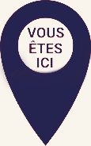

CREATIVE
WEB
Objectif :
Apporter ma
sans réinventer la
Hey !
Je suis Antoine Petit, Developpeur Web et Photographe.
Toujours en quête de nouveaux projets, je crée des solutions web offrant une expérience utilisateur simple, agréable et esthétique.
Mon expérience de plus de 12 ans en tant que photographe professionnel m'a appris à voir les choses avec un regard créatif et à apporter une touche artistique à mes projets.
Dans l'optique de proposer un service des plus complets, je me forme en continu aux toutes dernières technologies web.
Contactez-moi dès maitenant pour m'expliquer vos besoins.
Disponible pour :
DEVELOPPEMENT WEB & MOBILE
SEO | BRANDING | UI/UX
PHOTOGRAPHIE
1 vie en 4 lignes

DEVELOPPEMENT WEB
2022 -
PHOTOGRAPHIE PRO
2011 -
COMMERCE ANTIQUITES
2007 - 2010
FORMATION IMAGE
2006 - 2007
(4) Pêle Mele
Développeur web passioné par le design, j’ai eu l’occasion de travailler pour plusieurs centaines de clients dans ma précédente carrière de photographe.
J’y ai parfait mon sens de l’esthétique et du service et souhaite transposer ces acquis au sein de cette nouvelle aventure qu’est pour moi le développement web. Je crois fermement en une interface au service de l’utilisateur et accorde une importance capitale à l’accessibilité.
«Design as a service»
Je suis convaincu que le design doit promouvoir l’expérience plutôt que de rester simple ajout esthétique.
Mes 14 années (aïe !) en tant qu’indépendant m’ont également enseigné la maturité, la responsabilité et le besoin d’éprouver une solide détermination dans mon travail.
Je sais gérer mon temps et mes priorités de manière efficace, et je suis capable de travailler sous pression tout en respectant les délais.
«Fait avec ❤️»
Enfin, je crois que tout travail doit être fait avec amour. Etant avant tout passionné, je suis en recherche perpetuelle de nouveaux défis et si je ne connais pas quelque chose, je l'apprends.
Contactez moi maintenant et discutons !
INFO(s)
(1) Compétences
Front-end :
CSS - Vanilla JS - Bootstrap - SCSS - Wordpress - Figma
Back-end :
PHP - MySQL - Merise - OOP
Soft skills & Image :
MVC - Agile - Trello - Git/Github - SEO - Photographie - Photoshop - Capture One - Lightroom
(2) Futur (très) proche
React et React Native - Next - NodeJS - TypeScript - GSAP - Svelte - Rendez-vous avec vous ?